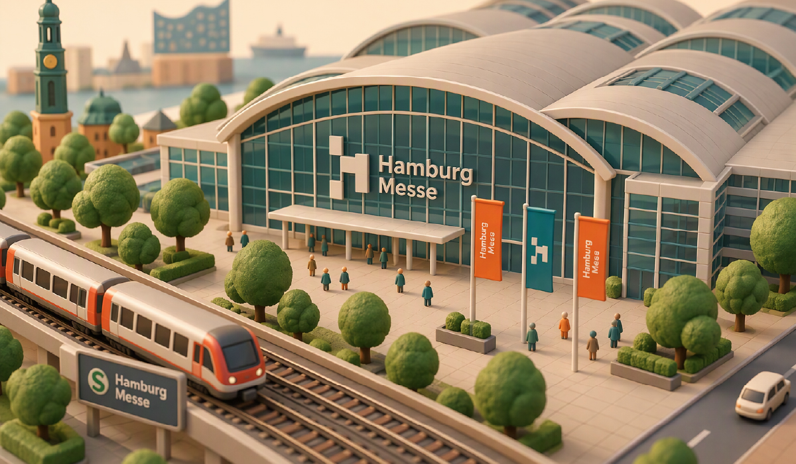

Gut zu wissen: Anfahrt, Fragen und Impressum
Hier finden Sie alles, was Sie für einen entspannten Messetag brauchen.
Anfahrt
Adresse
Messehallen HamburgMesseplatz 1
20357 Hamburg
Mit Bus und Bahn
- U2 bis Haltestelle Messehallen – der Ausgang liegt direkt vor dem Eingang Süd
- S-Bahn bis Sternschanze, von dort etwa 8 Minuten zu Fuß
- U1 bis Stephansplatz, von dort etwa 10 Minuten zu Fuß durch den Park Planten un Blomen

Mit dem Auto
Folgen Sie der Beschilderung „Messe“. Das Parkhaus der Messe liegt direkt an der Halle, Behindertenparkplätze finden Sie im Erdgeschoss nahe dem Aufzug. Am Messesonntag kostet das Parken 10 Euro pro Tag (erfundener Preis).
Barrierefreiheit
Alle Wege sind stufenlos. Es gibt Aufzüge, barrierefreie Toiletten, eine Induktionsschleife für Hörgeräte an der Großen Bühne und Leihrollstühle am Infostand. Bitte geben Sie besondere Wünsche bei der Ticketbestellung an, dann bereiten wir alles vor.
Häufige Fragen
Tippen oder klicken Sie auf eine Frage, um die Antwort zu öffnen.
Kann ich mit Rollstuhl oder Rollator kommen?
Ja, sehr gern. Alle Hallen sind stufenlos erreichbar, die Gänge sind mindestens zwei Meter breit, und es gibt Aufzüge sowie barrierefreie Toiletten. Rollatoren dürfen überall mit hinein.
Gibt es genug Sitzgelegenheiten?
Ja. An allen Spieltischen, im Lesecafé, vor den Bühnen und entlang der Gänge stehen Stühle und Bänke. Spätestens alle 20 Meter können Sie sich setzen. Im Ruheraum gibt es bequeme Sessel.
Darf ich eine Begleitperson mitbringen?
Natürlich. Begleitpersonen zahlen den ermäßigten Preis von 8 Euro. Wenn in Ihrem Schwerbehindertenausweis das Merkzeichen B steht, hat Ihre Begleitperson freien Eintritt.
Kann ich eigene Comics tauschen oder verkaufen?
Tauschen ist ab 16 Uhr bei der Comic-Tauschbörse in Halle B möglich – ganz ohne Anmeldung. Wer verkaufen möchte, kann für 15 Euro einen kleinen Tisch mieten. Bitte melden Sie sich dafür bis zum 31. Januar 2027 an.
Darf ich meine Enkel mitbringen?
Unbedingt! Enkelkinder bis 14 Jahre kommen in Ihrer Begleitung kostenlos herein. Für die ganz Kleinen gibt es eine Malecke mit Ausmalbildern von Petzi und Lurchi.
Gibt es Essen und Trinken?
Ja. Kaffee, Tee und Kuchen gibt es den ganzen Tag, mittags Erbsensuppe (auch vegetarisch). Eigene Brote und Getränke dürfen Sie gern mitbringen.
Gibt es eine Garderobe?
Ja, direkt am Eingang im Foyer Süd. Die Garderobe ist kostenlos, ebenso das Abstellen von Rollatoren und Gehstöcken.
Was ist, wenn ich mich nicht gut auskenne?
Unser Team trägt orangefarbene Westen und hilft Ihnen gern weiter – beim Weg, beim Spiel und beim Kaffee. Am Infostand bekommen Sie außerdem einen Hallenplan in großer Schrift.
Impressum
Studienprojekt der Kunstschule Wandsbek, keine echte Veranstaltung.
Alle Personen, Preise, Telefonnummern und die Entstehungsgeschichte auf dieser Website sind ausgedacht.
Verantwortlich für den Inhalt
Judith Timmc/o Kunstschule Wandsbek / kw.designakademie
Holzmühlenstraße 84
22041 Hamburg
Dies ist keine echte Veranstaltung!
Datenschutz
Diese Website setzt keine Cookies, lädt keine Inhalte von fremden Servern und verschickt keine Formulardaten. Was Sie in das Ticketformular eingeben, bleibt in Ihrem Browser und wird nirgendwo gespeichert.
Bildnachweis
Bilder und Grafiken
| Datei | Verwendung | Herkunft |
|---|---|---|
| images/hero-senioren-messe.webp | Startseite, großes Titelbild | Generiert mit Microsoft Copilot, bearbeitet von Judith Timm |
| images/maskottchen-spielfigur.png | Startseite, Maskottchen | Selbst erstellt über Claude mittels Python/Pillow |
| images/spiele-karussell.gif | Startseite, Animation der Spiele | Selbst erstellt über Claude, Animation zusammengesetzt mit Pillow |
| images/spiele-karussell-standbild.webp | Startseite, Standbild bei reduzierter Bewegung | Selbst erstellt über Claude mittels Python/Pillow |
| images/comic-stapel.jpg | Startseite, Comicstapel | https://www.picclickimg.com/-gsAAOSwcPZnLPNC/Kauka-38-x-FIX-und-FOXI-Comic-Hefte.webp |
| images/programm-lesung.webp | Programm, Lesung | Generiert mit Microsoft Copilot |
| images/programm-turnier.webp | Programm, Turnier | Generiert mit Microsoft Copilot |
| images/programm-zeichenkurs.webp | Programm, Zeichenkurs | Generiert mit Microsoft Copilot |
| images/story-gruender.jpg | Die Geschichte, Gründerpaar | Generiert mit Microsoft Copilot |
| images/story-flohmarkt.webp | Die Geschichte, Flohmarktstand | Generiert mit Microsoft Copilot |
| images/ticket-3d.png | Tickets, plastische Eintrittskarte | Selbst erstellt über Claude mittels Python/Pillow |
| images/anfahrt-messehalle.jpg | Infos, Clay-Illustration der Messehalle | Generiert mit Microsoft Copilot |
| images/fehler-404-figur.png | Fehlerseite, verlaufene Spielfigur | Selbst erstellt über Claude mittels Python/Pillow |
| images/og-vorschau.jpg | Vorschaubild für soziale Netzwerke | Selbst erstellt über Claude mittels Python/Pillow |
| images/apple-touch-icon.png | Symbol für den Startbildschirm von Smartphones | Selbst erstellt über Claude mittels Python/Pillow |
| images/logo.svg | Logo auf allen Seiten | selbst erstellt (SVG-Code), Schriftzug aus der Schrift Fredoka |
| images/favicon.svg | Symbol im Browser-Tab | selbst erstellt (SVG-Code) |
| images/icon-kalender.svg | Symbol Datum | selbst erstellt (SVG-Code) |
| images/icon-uhr.svg | Symbol Uhrzeit | selbst erstellt (SVG-Code) |
| images/icon-ort.svg | Symbol Ort | selbst erstellt (SVG-Code) |
| images/icon-ticket.svg | Symbol Eintritt und Tickets | selbst erstellt (SVG-Code) |
| images/deko-sprechblase.svg | Dekoration auf „Die Geschichte“ und der Fehlerseite | selbst erstellt (SVG-Code), Schriftzug aus der Schrift Fredoka |
Schriften
Beide Schriften liegen lokal auf dem Server und stehen unter der SIL Open Font License, Version 1.1.
- Überschriften und Logo: Fredoka von The Fredoka Project Authors – Lizenztext in fonts/OFL-fredoka.txt
- Fließtext: Atkinson Hyperlegible Next von The Atkinson Hyperlegible Next Project Authors, entwickelt vom Braille Institute für Menschen mit Sehschwäche – Lizenztext in fonts/OFL-atkinson-hyperlegible-next.txt